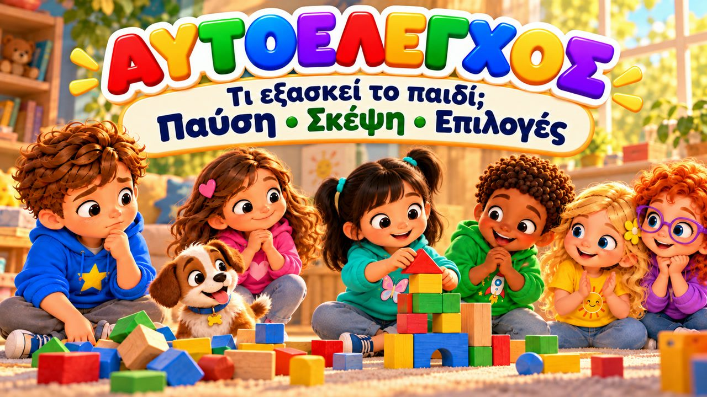
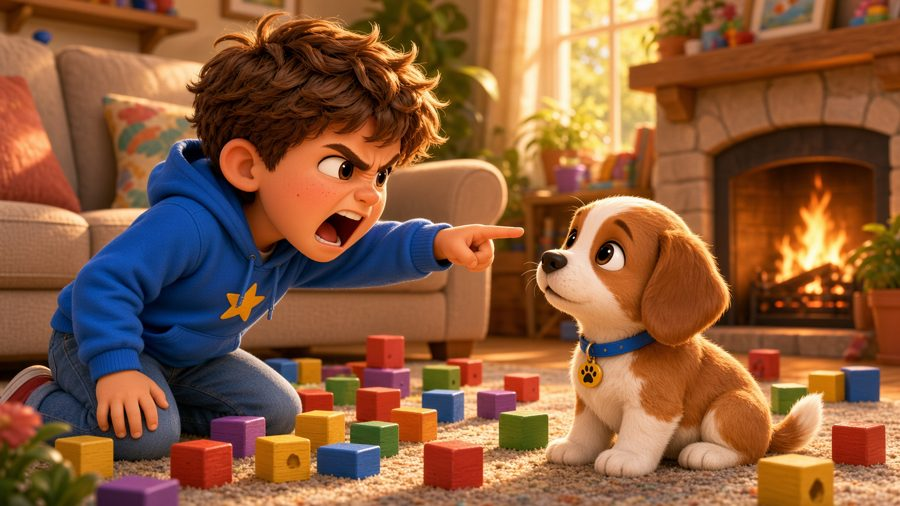
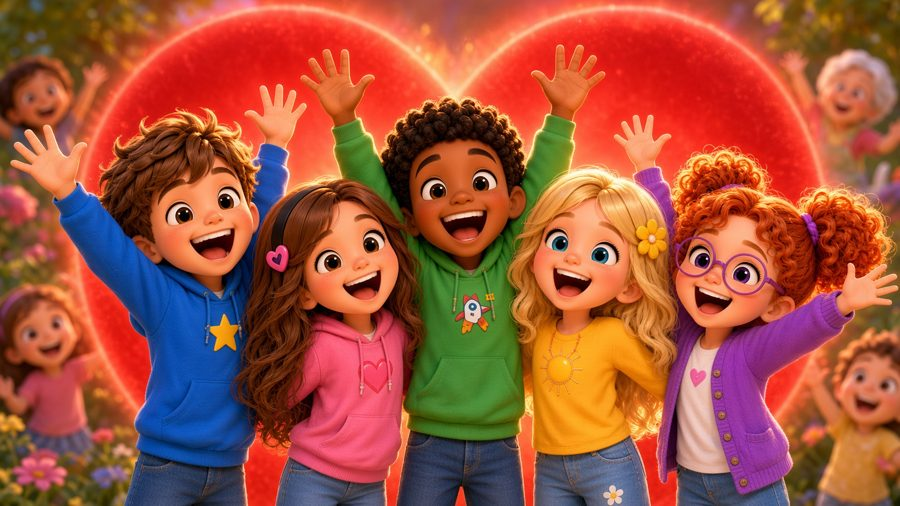
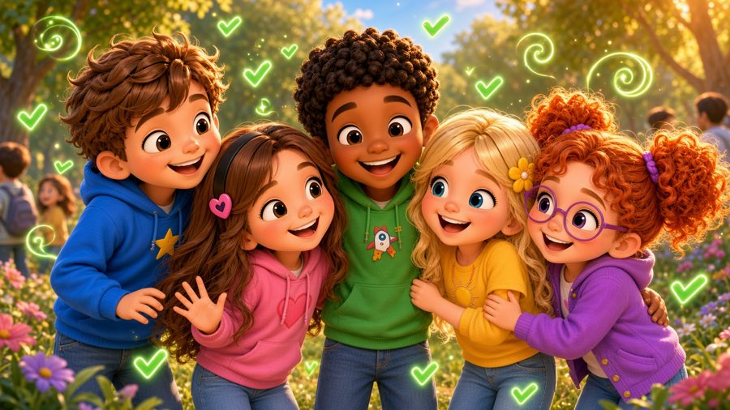

Σταμάτα! Σκέψου! Διάλεξε!
Ένα τραγούδι για τον αυτοέλεγχο! ✋ Τραγουδήστε με τον Μαξ, τη Μία, τον Τζέι, τη Λίλη, τη Ρόζα και τον σκυλάκο Μπάντι, που μαθαίνουν να ΣΤΑΜΑΤΟΥΝ, να παίρνουν ανάσα, να ΣΚΕΦΤΟΝΤΑΙ και να ΔΙΑΛΕΓΟΥΝ τι θα κάνουν — ακόμα κι όταν νιώθουν κάτι δυνατό.
Στο «Σταμάτα, Σκέψου, Διάλεξε!» ο Μπάντι ρίχνει τον πύργο του Μαξ, η Μία θέλει ένα μπισκότο αμέσως, κι ένα παιδί μπαίνει μπροστά στον Τζέι στην τσουλήθρα — και κάθε φορά σταματούν, παίρνουν ανάσα και διαλέγουν σωστά. Με στίχους-καραόκε στην οθόνη, για παιδιά 3–8 ετών, στο σπίτι, στο νηπιαγωγείο και στα Εργαστήρια Δεξιοτήτων.

▶💡 Γιατί είναι σημαντικό: Αυτοέλεγχος
Ο αυτοέλεγχος — να κάνουμε μια παύση πριν δράσουμε — είναι από τα πιο σημαντικά εφόδια για το πώς θα τα πάει το παιδί στο σχολείο και στις φιλίες. Δεν σημαίνει ότι δεν θυμώνουμε ή δεν ενθουσιαζόμαστε· σημαίνει ότι διαλέγουμε τι θα κάνουμε μετά. Εξασκηθείτε στο «σταματώ, σκέφτομαι, διαλέγω» μέσα από παιχνίδια (όπως το «αγάλματα») και επαινέστε τις στιγμές που το παιδί σταματά μόνο του.
👨👩👧 Τι μαθαίνει το παιδί
- Να σταματά πριν αντιδράσει ή φωνάξει
- Να ηρεμεί με μια βαθιά ανάσα
- Να σκέφτεται «τι θα συμβεί μετά;»
- Να μιλά αντί να αρπάζει ή να σπρώχνει
- Ότι τα δυνατά συναισθήματα είναι εντάξει — εμείς διαλέγουμε τι θα κάνουμε
💬 Κουβέντα μετά το τραγούδι
- Πότε σταμάτησες και διάλεξες κάτι καλό;
- Τι μπορείς να κάνεις αντί να φωνάξεις ή να αρπάξεις;
🏅 Κουίζ & Πτυχίο
Είδατε το τραγούδι μαζί; Τώρα διαβάστε στο παιδί κάθε ερώτηση — το παιδί δείχνει τη σωστή εικόνα. Αν απαντήσει και στις 6 ερωτήσεις, κερδίζει ένα πτυχίο για εκτύπωση!
🔒 Το όνομα χρησιμοποιείται μόνο για να φτιαχτεί το πτυχίο στη συσκευή σας. Δεν αποθηκεύουμε και δεν στέλνουμε τίποτα.
Τα κατάφερες! 🎉
Και οι 6 απαντήσεις είναι σωστές! Γράψτε το όνομα του παιδιού για να φτιαχτεί το πτυχίο.
🖨️ Δωρεάν εκτυπώσιμα
Δωρεάν για χρήση στο σπίτι και στην τάξη. Εκτυπώστε σε χαρτί Α4.
🖼️ Σκηνές από το τραγούδι





🎵 Κι άλλα τραγούδια


🎤 Στίχοι – Σταμάτα! Σκέψου! Διάλεξε!
Περίμενε!
Πριν το κάνω...
πριν το πω...
μπορώ να σταματήσω!
Παίρνω ανάσα...
σκέφτομαι...
και διαλέγω!
Ο Μαξ έφτιαχνε έναν πύργο,
όλο και πιο ψηλό!
Ο Μπάντι έτρεξε στο δωμάτιο...
ΜΠΑΜ!
Κι ο πύργος έπεσε κάτω!
Ο Μαξ θύμωσε πολύ,
ήθελε αμέσως να φωνάξει:
«ΦΥΓΕ!»
Μα σταμάτησε εκεί.
Πήρε μια βαθιά ανάσα...
«Τι μπορώ να κάνω
αντί να φωνάξω;»
Πριν κάνω κάτι,
σταματώ.
Και σκέφτομαι
τι θα συμβεί.
Έχω επιλογές πολλές...
Σταματώ...
Σκέφτομαι...
Και διαλέγω!
ΣΤΑΜΑΤΑ!
ΣΚΕΨΟΥ!
ΔΙΑΛΕΞΕ!
Έχεις επιλογές!
ΣΤΑΜΑΤΑ!
ΣΚΕΨΟΥ!
ΔΙΑΛΕΞΕ!
Διάλεξε τι θα κάνεις!
Πάρε ανάσα!
Σκέψου καλά!
Ποια επιλογή
θα βοηθήσει τελικά;
Μπορεί να νιώθω
κάτι δυνατό...
μα εγώ διαλέγω
τι θα κάνω!
ΣΤΑΜΑΤΑ!
ΣΚΕΨΟΥ!
ΔΙΑΛΕΞΕ!
Η Μία είδε μπισκότα
πάνω στο τραπέζι.
«Μμμ! Θέλω ένα τώρα!
Μυρίζει τόσο ωραία!»
Άπλωσε το χέρι...
μα σταμάτησε εκεί.
«Μου είπαν άραγε
ότι μπορώ να πάρω;»
Τράβηξε το χέρι
και πήγε να ρωτήσει:
«Μπορώ να πάρω
ένα μπισκότο;»
Η γιαγιά Νελ της είπε:
«Μετά το φαγητό.»
«Εντάξει!»
είπε η Μία
και χαμογέλασε.
Το ήθελε τώρα...
μα μπορούσε να περιμένει!
Πριν κάνω κάτι,
σταματώ.
Και σκέφτομαι
τι θα συμβεί.
Έχω επιλογές πολλές...
Σταματώ...
Σκέφτομαι...
Και διαλέγω!
ΣΤΑΜΑΤΑ!
ΣΚΕΨΟΥ!
ΔΙΑΛΕΞΕ!
Έχεις επιλογές!
ΣΤΑΜΑΤΑ!
ΣΚΕΨΟΥ!
ΔΙΑΛΕΞΕ!
Διάλεξε τι θα κάνεις!
Πάρε ανάσα!
Σκέψου καλά!
Ποια επιλογή
θα βοηθήσει τελικά;
Μπορεί να νιώθω
κάτι δυνατό...
μα εγώ διαλέγω
τι θα κάνω!
ΣΤΑΜΑΤΑ!
ΣΚΕΨΟΥ!
ΔΙΑΛΕΞΕ!
Ο Τζέι περίμενε στην τσουλήθρα,
ήσυχα στη σειρά.
Ένα παιδί μπήκε μπροστά του
χωρίς να το καταλάβει καλά.
Ο Τζέι πήγε να θυμώσει:
«Ε! Εγώ ήμουν εδώ!»
Μα σταμάτησε,
πήρε ανάσα
και σκέφτηκε τι να πει.
«Συγγνώμη,
περίμενα εδώ στη σειρά.»
Το παιδί γύρισε και του είπε:
«Ωχ! Συγγνώμη!»
και πήγε πίσω στη σειρά.
Χωρίς σπρώξιμο.
Χωρίς φωνές.
Με λίγα λόγια
βρήκαν τη λύση!
Θέλεις να το αρπάξεις;
ΣΤΑΜΑΤΑ!
Θέλεις να φωνάξεις;
ΠΑΡΕ ΑΝΑΣΑ!
Και μετά;
ΣΚΕΨΟΥ!
Έχεις επιλογές;
ΝΑΙ!
Μπορείς να το πεις με λόγια;
ΝΑΙ!
Μπορείς να περιμένεις;
ΝΑΙ!
Μπορείς να ζητήσεις βοήθεια;
ΝΑΙ!
Και τώρα τι κάνεις;
ΣΤΑΜΑΤΑ!
ΣΚΕΨΟΥ!
ΔΙΑΛΕΞΕ!
Αυτοέλεγχος δεν σημαίνει
πως δεν θυμώνω ποτέ.
Δεν σημαίνει
πως δεν ενθουσιάζομαι.
Σημαίνει πως...
δεν χρειάζεται να κάνω
αμέσως το πρώτο πράγμα
που μου έρχεται στο μυαλό.
Μπορώ να σταματήσω.
Μπορώ να σκεφτώ.
Και μπορώ να διαλέξω.
ΣΤΑΜΑΤΑ!
ΣΚΕΨΟΥ!
ΔΙΑΛΕΞΕ!
Έχεις επιλογές!
ΣΤΑΜΑΤΑ!
ΣΚΕΨΟΥ!
ΔΙΑΛΕΞΕ!
Διάλεξε τι θα κάνεις!
Πάρε ανάσα!
Σκέψου καλά!
Δες ποια επιλογή
θα βοηθήσει τελικά!
Μπορώ να περιμένω!
Μπορώ να μιλήσω!
Μπορώ να ρωτήσω!
Μπορώ να ζητήσω βοήθεια!
Έχω επιλογές!
ΣΤΑΜΑΤΑ!
ΣΚΕΨΟΥ!
ΔΙΑΛΕΞΕ!
Μπορεί να νιώθω
κάτι δυνατό...
μα εγώ διαλέγω
τι θα κάνω!
Πριν κάνω κάτι...
σταματώ.
Πριν φωνάξω...
παίρνω ανάσα.
Πριν διαλέξω...
σκέφτομαι.
ΣΤΑΜΑΤΑ...
ΣΚΕΨΟΥ...
ΔΙΑΛΕΞΕ!